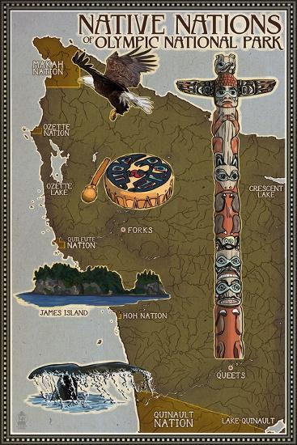
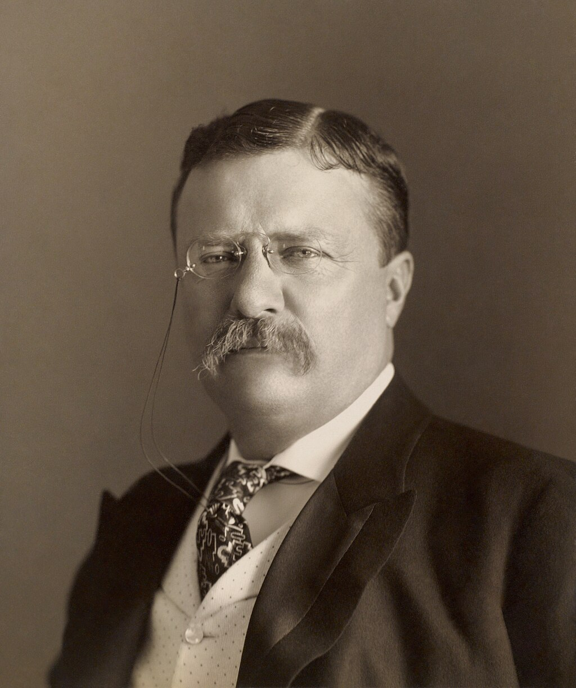
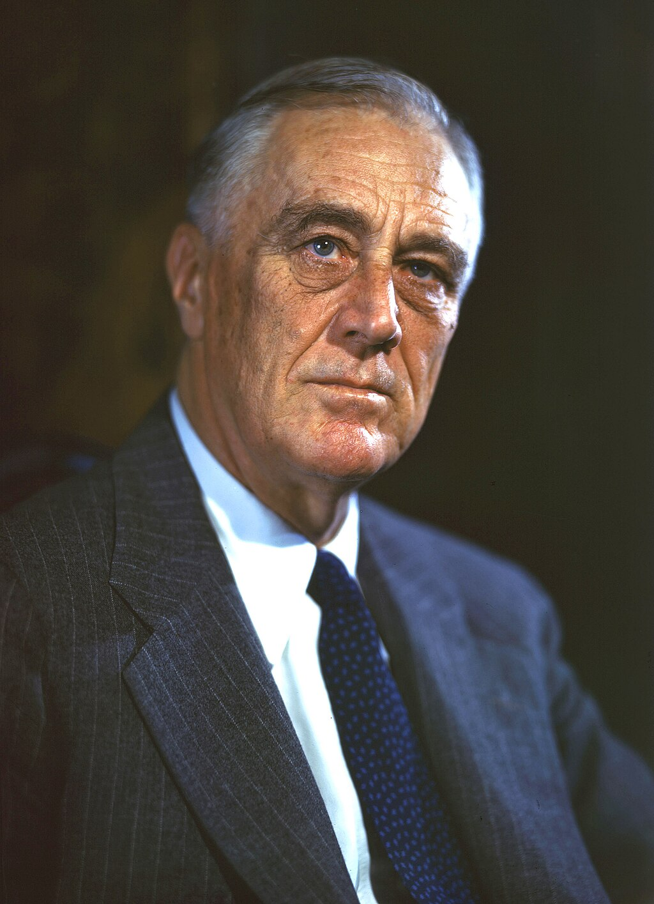

A History of the Park
Before the influx of European settlers, Olympic's human population consisted of Native Americans, whose use of the peninsula was thought to have consisted mainly of fishing and hunting. However, recent reviews of the record, coupled with systematic archaeological surveys of the mountains (Olympic and other Northwest ranges) are pointing to much more extensive tribal use of especially the subalpine meadows than seemed formerly to be the case. Most if not all Pacific Northwest indigenous cultures were adversely affected by European diseases (often decimated) and other factors, well before ethnographers, business operations and settlers arrived in the region, so what they saw and recorded was a much-reduced native culture base. Large numbers of cultural sites are now identified in the Olympic mountains, and important artifacts have been found.

When settlers began to appear, extractive industry in the Pacific Northwest was on the rise, particularly in regards to the harvesting of timber, which began heavily in the late 19th and early 20th centuries. Public dissent against logging began to take hold in the 1920s, when people got their first glimpses of the clear-cut hillsides. This period saw an explosion of people's interest in the outdoors; with the growing use of the automobile, people took to touring previously remote places like the Olympic Peninsula.
The formal record of a proposal for a new national park on the Olympic Peninsula begins with the expeditions of well-known figures Lieutenant Joseph P. O'Neil and Judge James Wickersham, during the 1890s. These notables met in the Olympic wilderness while exploring, and subsequently combined their political efforts to have the area placed within some protected status. On February 22, 1897, President Grover Cleveland created the Olympic Forest Reserve, which became Olympic National Forest in 1907. Following unsuccessful efforts in the Washington State Legislature to further protect the area in the early 1900s, President Theodore Roosevelt created Mount Olympus National Monument in 1909, primarily to protect the subalpine calving grounds and summer range of the Roosevelt elk herds native to the Olympics.


A park ranger gives a sunset naturalist talk at the park, ca. 1960. Public desire for preservation of some of the area grew until President Franklin D. Roosevelt signed a bill creating a national park in 1938. The Civilian Conservation Corps constructed a headquarters in 1939 with funds from the Public Works Administration. It is now on the National Register of Historic Places. The national park was expanded by 47,753 acres (19,325 ha) in 1953 to include the Pacific coastline between the Queets and Hoh rivers, as well as portions of the Queets and Bogachiel valleys.

Even after ONP was declared a park, though, illegal logging continued in the park, and political battles continue to this day over the incredibly valuable timber contained within its boundaries. Logging continues on the Olympic Peninsula, but not within the park. The Olympic Wilderness, a designated wilderness area, was established by the federal government in 1988 that contained 877,000 acres (355,000 ha) within Olympic National Park. It was renamed the Daniel J. Evans Wilderness in 2017 to honor Governor and U.S. Senator Daniel J. Evans, who had co-sponsored the 1988 legislation. A proposed expansion of the wilderness area by 125,000 acres (51,000 ha) in 2022 was not successful.